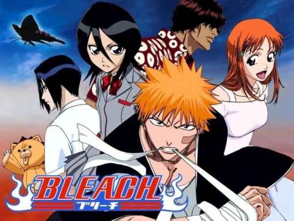

Substituto de Shinigami
Ichigo conhece Rukia e se torna um Shinigami substituto para proteger sua cidade.
Principais Eventos:
- Encontro com Rukia Kuchiki
- Ichigo obtém poderes de Shinigami
- Proteção de Karakura contra Hollows
- Introdução aos personagens principais